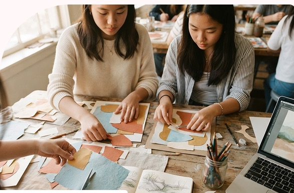
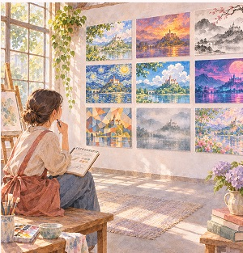
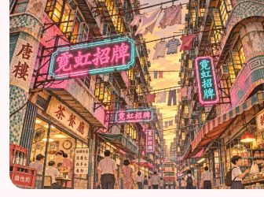
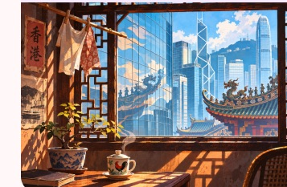
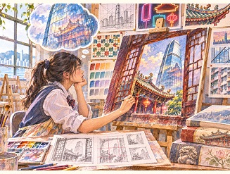

先观察，再生成
从生活经验与真实感受出发。先让学生说出自己的问题，再决定是否需要 AI 的协助。

「你為什麼選擇這一版？」
好問題！比標準答案更重要。
01教学理念
AI 协作美育不是把美术课变成工具课，而是把生成的速度，转化为观察、比较与对话的空间。培育个体在创作中的审美观判断力、叙事整合与洞悉与解决问题的能力，技法固然重要，思考更不能缺席。
从生活经验与真实感受出发。先让学生说出自己的问题，再决定是否需要 AI 的协助。
把生成结果当作讨论素材，而非标准答案。比较构图、色彩与情绪，练习说明选择的理由。

02教学流程
改变的不只是工具，而是学习的顺序。
教师 = 技法示范者和批改专员
教师 = 审美感知与意义解读引领者
03教学任务
把理念带进教室，从课堂主题开始。
绘画主题：
维多利亚港天际线
视觉符号：玻璃幕墙折面
几何符号：暖橙夕阳 / 紫蓝暮色
构图方案：
水平全景构图
低视平线，天空占 2/3
绘画主题：
旧式唐楼市井生活
视觉符号：霓虹招牌
铁闸门
几何符号：马赛克瓷砖、晾衣杆
构图方案：
低角度仰望唐楼
两侧建筑形成视觉隧道

✓ 已选择该方案绘画主题：
摩天大楼与庙宇对话
视觉符号：
对比符号：直线 VS 曲线
空间符号：玻璃反射 VS 庙脊雕花
构图方案：框景构图
透过旧窗框、望新楼：
前景暗景、后景亮

✓ 已选择该方案点击卡片可以选择进入课堂讨论的方案，下方「教学方案」会同步更新。
04教学方案
师生共同探讨以上生成的多版视觉方案

开始备课
明确本课与AI的关系，AI是思维的放大镜，不是替代者。
审美感知：能识别视觉焦点与情感。
艺术表现：掌握相关技法与符号。
文化理解：能讨论作品背后的意义。
选择贴近生活经验的艺术主题里设计有开放的创作任务。
师生共写提示词，把思考转为语言，AI批量输出多版视觉方案。
从主题表达力、符号丰富度、构图可操作性、文化思考深度，以这四个维度为切入点，选出方案。
技法练习加一一讨论加创作实践，关注过程，观察选择修改表达。最后需要评价作品，关注学生思维与成长。